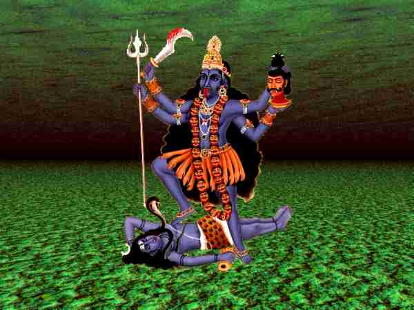
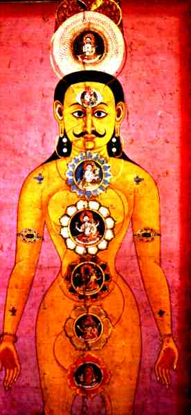

Chnum shapes body and Ka (etheric body) of the new born (old Egypt.)
|
copyright @ Alfred Ballabene, Vienna, Austria, 2000
| The religion as an institution
With agriculture, king, warriors, farmers, merchants and handicraftsmen specialization has come. They hat to manage their livelihood by their own, which certainly was not easy. Ceremonies had to be complicated enough, so that ordinary people could not do it and that it was necessary to call a priest. Destiny in this world and beyond after death was not alone determined by inner qualities but as well was guided by ceremonies, whose magic power was dependent of the status of the priest, the number of priests and the quality of incantation. Of course this was a matter of payment. If payment was adequate even a common person could have a comfortable past-life and the higher realms no more were privileged for Shamans and heroes. At this time it was thought that the human was not born in a natural way by nature itself, but that he was created by gods and that through all his life gods and demons interfered (which could be handled by priests). Below you see an Old Egypt drawing, well, I have
modernized it. In this drawing you see how a coming human is shaped by the
god Chnum. |
Chnum shapes body and Ka (etheric body) of the new born (old Egypt.)
|
| The start of differentiation and dogmas
With the come of religions a classification of the world, the realms of the gods and demons and the qualities of the human and their bodily location had started. Intellectuality has become important to the human and religious/philosophical/magical knowledge has become the basis of a social status. |
| Looking aside to Hinduism and Indian Yoga
If we take a look at the Hinduism we still can find in midst of the great Pantheon of gods a rest of the old earth-sky/heaven belief. It's the Tantrism which is based on this former polarity and has survived in a somehow changed way until present time. The aspect of earth has its counterpart in the human body as vitality (Ind. Shakti, Durga) and the aspect of heaven has its counterpart in human microcosmic structure as cosmic consciousness (Ind. Shiva). The correlation of both you can see in the image below. |

| Durga Commonly nature on earth and in the human is dominated by Durga, the aspect of vitality and sexual/magic force, who is dancing (is based) on the cosmic consciousness (the god Shiva) which/who is still sleeping in unawakened nature. |
| The "Jakobs Ladder"
In a certain way the Shakti in Indian Yoga is identical with the subtle body of the OBEers. This teaching is explained in detail in the Yoga section of this homepage, namely the part which deals about the Vajra Yogini. The spiritual development of the Yogi is symbolized as an ascent of the Shakti (subtle body) upwards the spine, from Chakra to Chakra (each Chakra is identical with a plane, the first 4 are the 4 elements, then follows the etheric and next the astral plane). At last Shakti unifies with Shiva, which means that the Yogi has reached the cosmic consciousness. Somehow veiled in complicated techniques and ancient understanding of the world in this Yogic concept you have an explanation for common experiments in OBEing: In the first OBE experiences you experience your etheric body - these first experiences mostly are spontaneous of persons whose soul is at the way of "awakening". To keep the process of reviving alife OBE methods like those of "floating out", "stepping out" methods are recommended. If you continue your way upwards the "Jakobs Ladder" (a Christian symbol which fits to the ascent of Shakti) your etheric OBE will change to astral travelling. Many people are afraid of these astral experiences because very often the OBEers are confronted with demonic and hellish entities and plans. But this way through the dark valley is to be done in order to come to an understanding for the own inner subconscious animal-like and instinctive forces. Very often the process of self-development is broken at this stage, because the OBE beginners are afraid. That is a great dilemma. To be accepted in higher plans as a valuable member it needs self-confidence, knowledge and tolerance to own weakness and mistakes and those of others in respect to our animal heredity. |

| Chakras
Here above you saw an illustration of the Chakras and the pairs of gods (the qualities of life-force and consciousness at the particular special stages). The Chakras nowadays are accepted as a standard in most modern esoteric branches (see the Yoga section of this homepage). The first 4 Chakras relate to the 4 elements. Well, in OBEing there does exist an earth plane = physical plane, but there do not exist plans related to water, air and fire. This is no reason, however, to put this theorie aside, because from the point of view of the development of the consciousness these elements do exist, in a modern way called archetypes ( symbols of the subconscious deciphred by C.G. Jung) In India the process of differentiation at last culminated in the theory of the Chakras, a theory which today is accepted as a standard in most modern esoteric branches (see the Yoga section of this homepage). |